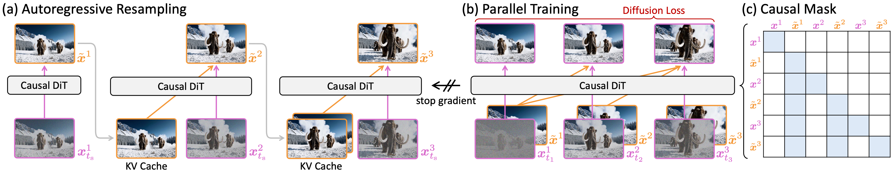
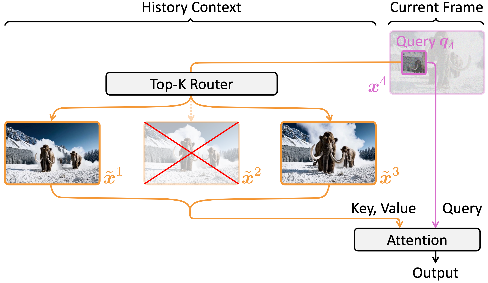

(a) Teacher forcing training accumulates errors and leads to video collapse. (b) Distilled from a short bidirectional teacher, Self-Forcing1 suffers from the degraded quality on longer videos. (c) Our method supports native end-to-end training on long videos with stable quality.
Abstract
Autoregressive video diffusion models hold promise for world simulation but are vulnerable to exposure bias arising from the train-test mismatch. While recent works address this via post- training, they typically rely on a bidirectional teacher model or online discriminator. In pursuit of an end-to-end solution, we introduce Resampling Forcing, a teacher-free paradigm that enables training autoregressive video models from scratch and at scale. Our key idea is a self-resampling scheme that simulates inference-time model-induced errors on history frames during training. Conditioned on these imperfect histories, a sparse causal mask enforces temporal causality and enables parallel training with frame-level diffusion loss. To support efficient long-horizon generation, we further introduce history routing, a parameter-free mechanism that dynamically selects the top-k most important history frames for each query. Experiments demonstrate that our approach matches the performance of distillation-based baselines while delivering superior temporal consistency on longer videos through native-length training.
Method
Top: Autoregressive video generation suffers from exposure bias due to the train-test mismatch: models are conditioned on ground-truth history during training (Teacher Forcing) but must rely on their own imperfect predictions during inference. This leads to error accumulation and cause the video to drift from the real distribution.
Buttom: We propose to conditioning the model on self-generated, imperfect histories during training to stablize model error. This relaxes the model from strictly adhering to the input conditions and enables correction of input errors, thereby achieving stable long-horizon generation.
Illustration of Error Accumulation.
Error Simulation
To mirror the inference-time error distribution, we propose a Self-Resampling mechanism. Rather than using clean ground-truth frames as conditions, we autoregressively resample the history frames using the online model weights.
Specifically, we perturb the ground-truth history to a sampled timestep and denoise it using the training model itself. This process generates a degraded history that encapsulates inference-time model error. Crucially, we apply a stop-gradient operation to the resampling process to prevent shortcut learning. This ensures the model is optimized solely to predict the clean target from degraded conditions, effectively learning to rectify accumulated errors and maintain temporal causality.

Illustration of Resampling Forcing Training.
Sparse History Routing
Modeling long-term dependencies in autoregressive generation presents a challenge: dense causal attention incurs linear memory growth, while sliding-window attention sacrifices global consistency. We address this trade-off with history routing, a parameter-free mechanism that dynamically selects the most informative context.
For each query token in the current frame, a router retrieves only the top-k most relevant frames for attention computation. This mechanism reduces the attention complexity from linear to near-constant, enabling efficient scaling to long video sequences without quality degradation.

Illustration of History Routing.
More Results
Below we showcase additional generation results across diverse prompts, demonstrating the versatility and quality of our approach. Click on any caption to expand the full prompt text.
"A child in a cozy winter outfit, blowing gently on a steaming mug of hot cocoa to cool it down. The child has rosy cheeks and warm mittens, with a look of anticipation and slight concentration on their face. They stand in a living room with a fireplace, the warm glow casting a soft, golden light on the scene. A few books and toys are scattered around, adding to the cozy atmosphere. The background shows a blurred view of a fireplace mantel with a wooden clock and some ornaments. The photo has a warm, homey feel. A close-up shot from a slightly lower angle."
"A close-up shot of a bright blue parrot's shimmering feathers, capturing the unique and vibrant colors in the light. The parrot's feathers glisten with a metallic sheen, showcasing a mix of deep indigos, vivid greens, and rich blues. Its eyes sparkle with curiosity, and it appears lively and alert, perched on a branch. The background is blurred, highlighting the parrot against a soft, warm environment. The photo has a naturalistic and lifelike quality, emphasizing the bird's detailed plumage and natural movements."
"A high-speed FPV (First Person View) shot inside the locomotive cab of a vintage European train, moving at hyper-speed through the bustling streets of an old European city. The cab is filled with intricate mechanical details, including dials, switches, and controls, with steam and smoke swirling around. The train's windows show blurred, colorful buildings and narrow cobblestone streets passing by quickly. The camera angle provides a dynamic, immersive view, capturing the intense motion and the rich architectural details of the cityscape. The overall style is detailed and realistic, emphasizing the speed and energy of the journey."
"A miniature baby zebra, no bigger than a human thumb, is balancing on a fingertip, its legs slightly trembling as it tries to find its footing. It has a black and white striped coat, large round eyes, and a small tuft of fur on its head. Its ears are perked up, listening intently to its surroundings. The background is blurred, with only faint hints of a colorful, tropical landscape. The zebra's tiny hooves grip the fingertip firmly, showcasing the incredible dexterity of the miniature model. The photo has a detailed macro focus, capturing every strip and detail of the zebra's coat. A close-up shot from a low angle."
"A close-up shot of a hand, fingers moving smoothly and precisely, spreading creamy butter onto a freshly sliced piece of bread. The sunlight filters through, casting gentle shadows and highlighting the golden-brown crust. The hand is well-defined, with nails neatly trimmed and a hint of warmth in the skin tone. The bread is artisanal, with visible grains and a slightly toasted texture. The scene has a warm and inviting feel, capturing the moment just before the butter is evenly distributed across the slice."
"A realistic photograph capturing a woman taking a pleasant stroll in Johannesburg, South Africa, during a winter storm. She wears blue jeans and a white t-shirt, with her hair flowing gently in the wind. She walks confidently, arms swinging naturally at her sides, her face illuminated by the soft, diffused light of the storm. The background features a blurred cityscape with skyscrapers and trees, their branches swaying in the wind. The sky is overcast with dark clouds and light rain, creating a moody, atmospheric scene. A medium shot from a slightly elevated angle, emphasizing her determined and serene expression."
"A vibrant tropical fish swimming gracefully among colorful coral reefs in a clear, turquoise ocean. The fish has bright blue and yellow scales with a small, distinctive orange spot on its side, its fins moving fluidly. The coral reefs are alive with a variety of marine life, including small schools of colorful fish and sea turtles gliding by. The water is crystal clear, allowing for a view of the sandy ocean floor below. The reef itself is adorned with a mix of hard and soft corals in shades of red, orange, and green. The photo captures the fish from a slightly elevated angle, emphasizing its lively movements and the vivid colors of its surroundings. A close-up shot with dynamic movement."
"A nighttime scene from a vintage film-style photograph, depicting a giant, otherworldly creature slowly walking down a desolate, rundown city street. Only one dim streetlamp casts flickering shadows, illuminating the creature's massive, imposing form. Its skin is rough and covered in peculiar growths, with glowing eyes that reflect the dim light. The creature's steps echo in the empty alleyways, creating a sense of eerie quiet. The background features crumbling buildings, broken windows, and trash-strewn sidewalks. The photo has a grainy texture and a muted color palette, capturing the haunting atmosphere of the scene. A medium shot with a slight tilt to the camera, emphasizing the creature's movement and presence."
"A dynamic tracking shot in the style of a thrilling action movie, capturing a car navigating a winding mountain road. The camera follows the car closely, showcasing the rugged terrain and scenic views. As the car twists and turns, the landscape changes dramatically, revealing lush green forests, steep cliffs, and distant peaks. The road winds through valleys and over rocky outcrops, creating a sense of adventure and excitement. The car's headlights illuminate the path ahead, casting shadows on the rugged landscape. The overall scene is rendered in a high-definition, cinematic style, emphasizing the movement and the breathtaking vistas."
"A cinematic wide-angle portrait of a man with his face illuminated by the warm glow of a TV screen. The man, with a rugged yet determined expression, leans forward slightly against a vintage wooden armchair. His dark hair is slightly disheveled, and he wears a worn leather jacket over a plain white shirt. The background features a cluttered living room with old books, newspapers, and a few framed photos scattered around. The TV shows static, with a faint image of a news broadcast flickering in the corner. The overall scene has a nostalgic and gritty feel, with a rich color palette and a soft, grainy texture. A wide-angle shot capturing the man's intense gaze and the warm ambiance of the room."
"A realistic photograph in a gritty urban style of a white and orange tabby alley cat dashing across a narrow back street alley during a heavy downpour. The cat is drenched, its fur matted and slick, and it looks determinedly for shelter. Its green eyes are wide and alert, focused intently on finding a safe place. The background is blurred, revealing a dimly lit alley with wet cobblestones and a few dilapidated buildings. The photo has a sharp focus on the cat, capturing its natural movements and the dynamic environment. A medium shot from a low angle, emphasizing the cat's urgency and the wet, urban setting."
"A close-up shot of a woman in a noir-inspired style, with smoky lighting and a blurred background hinting at a dimly lit alley. She holds a cigarette between her fingers, her gaze fixed ahead with a slight hint of determination and resignation. Her hair, styled in loose waves, frames her face softly. She wears a black leather jacket over a red blouse, and her posture is relaxed yet somewhat tense. The cigarette smoke forms a gentle haze around her, adding to the atmospheric mood. Her expression is one of contemplation, with a subtle smile playing on her lips. A medium close-up from a slightly downward angle, capturing her facial expression and the cigarette in detail."
"A sunset scene captured in a realistic photographic style, with the sun setting over a vast ocean. Golden sunlight scatters across the water surface, creating a glittering path that reflects the horizon. The sky is painted with hues of orange, pink, and purple, transitioning into deep blues as the sun dips below the waves. The water ripples gently, catching the light and creating a shimmering effect. The horizon is framed by tall cliffs with rugged, rocky formations, adding depth to the scene. A lone sailboat drifts on the water, its sails partially unfurled, creating a sense of tranquility and natural beauty. A wide-angle shot capturing the entire expanse of the ocean and sky."
"A nighttime footage shot in a documentary style, capturing a hermit crab scuttling with determination, carrying an incandescent lightbulb as its new shell. The hermit crab has a small, rounded body with a hard, protective exoskeleton, and its eyes are large and black, reflecting the dim light. Its claws are strong and nimble, moving swiftly across the sandy ground. The background features a dark, moonlit beach with waves gently lapping against the shore, creating a serene and tranquil atmosphere. The lighting is soft and warm, highlighting the contrast between the hermit crab and its surroundings. The camera angle is slightly low, providing a close-up view of the crab’s movements."
"A dramatic photo in a gritty, realistic style of a middle-aged man standing in front of a partially collapsed, burning building. He gives a thumbs up sign, his face showing determination and resolve despite the danger. His weathered face and rugged, fire-resistant clothing suggest he is a firefighter or emergency responder. The background is a chaotic mix of flames, smoke, and debris, with emergency vehicles in the distance. The scene is captured from a low-angle perspective, emphasizing the man's bravery and the intensity of the situation."
Baseline Comparison
We compare our method against several representative autoregressive video generation works. Our method demonstrates superior visual quality and temporal causality across diverse prompts. Videos are resized to speed up webpage loading.
"A full-body shot of a man crafted entirely from rocks, walking through a dense forest. His rocky form is rugged and textured, with various shades of gray and brown. He strides confidently, his steps creating small ripples in the forest floor."
"A close-up shot of someone carefully pouring milk into a cup, with the milk flowing smoothly and filling the cup with a milky white color. The person's hand is steady, guiding the milk into the cup with precision."
"A handheld tracking shot following a red balloon floating above the ground in an abandoned street. The balloon drifts gracefully, its bright red color contrasting sharply against the decaying urban backdrop."
"A single white sheep bending down to drink water from a calm river. The sheep has fluffy wool, long curved horns, and soft brown eyes. It is positioned near the riverbank."